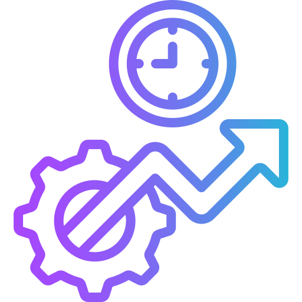

| Date | Progress | 💤 | 😌 | 📱 | ✍️ | 💧 | 💻 | 💪 | 📖 | 🚶 | 📋 | Status | Notes |
|---|
| Date | Progress | 💤 | 😌 | 📱 | ✍️ | 💧 | 💻 | 💪 | 📖 | 🚶 | 📋 | Status | Notes |
|---|
Track your perfect days and unlock epic milestones!A perfect day = All habits completed (🔥 Keep it up!)
This tracker reads and writes directly to your Notion database via a local backend.
One row per day, with a checkbox column per habit, a computed progress value, notes,
and status. Nothing is cached in the browser — refresh at any time to see the latest
state of your Notion data. Habit icons are stored locally in emoji.json,
alongside habit weights in weights.json, since Notion checkbox properties
can't hold either.